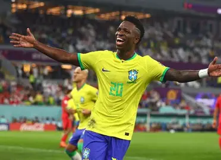

Vinicius Junior the leagend
- Where he is now: Real Madrid announced on 6 August 2026 that he has signed a new contract to June 2032.
Arsenal had been interested while he was in the last year of his old deal.The financial terms weren’t disclosed.
- Age and club record: He is 26 and joined Real Madrid at 18. He has 128 goals in 375 appearances and 14 trophies,
including three La Liga titles and two Champions Leagues.
- Brazil at the 2026 World Cup: He scored four goals and set up another, but Norway knocked Brazil out in the round of 16.
- Style: He is a very fast left winger who beats defenders one-on-one with dribbling.
- Early career: He was born on 12 July 2000 in São Gonçalo, near Rio de Janeiro. He came through Flamengo’s youth system and joined Madrid in 2018 for a fee of about €45 million.
- Early career: He was born on 12 July 2000 in São Gonçalo, near Rio de Janeiro. He came through Flamengo’s youth system and joined Madrid in 2018 for a fee of about €45 million.